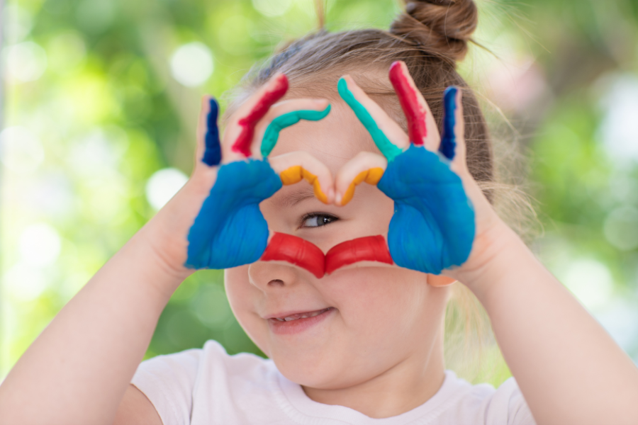

Allergien & Heuschnupfen
Wenn Augen tränen, die Nase im Frühling läuft oder Hautreaktionen wiederkehren — wir schauen, was das System gerade nicht verarbeiten kann.
PollenTierhaareHausstaub
Allergien, Bauchthemen, Konzentration, Unruhe — ich nehme mir Zeit für die ganze Geschichte hinter dem Symptom. Naturheilkundlich, in Absprache mit den Eltern und ergänzend zur kinderärztlichen Versorgung.

Manchmal in Worten, oft im Verhalten. In Bauchschmerzen, die montags wiederkommen. In Müdigkeit, die nicht zur Jahreszeit passt. In einer Haut, die immer wieder protestiert. Mein Job ist nicht, das wegzumachen — sondern zu verstehen, was es zeigt.
Sechs Themenfelder, in denen die Kindersprechstunde am häufigsten gefragt ist. Mit dem CheckIn schaue ich genau, wie und in welcher Form ich Sie als Familie begleiten kann.
Wenn Augen tränen, die Nase im Frühling läuft oder Hautreaktionen wiederkehren — wir schauen, was das System gerade nicht verarbeiten kann.
Wiederkehrende Bauchschmerzen, Verstopfung, Blähungen, Durchfall — der Bauch erzählt oft, was anderswo nicht gehört wird.
Histamin, Laktose, Fruktose, Gluten — wenn der Bauch auf bestimmte Lebensmittel reagiert oder ein Verdacht im Raum steht.
Wenn die Schule zur Belastung wird, das Lesen schwerfällt oder Hausaufgaben jeden Nachmittag zur Schlacht werden — Konzentration ist kein Wille, sondern System.
Wenn das Einschlafen Stunden dauert, das Aufwachen erschöpft, der Tag voller Anspannung ist — das Nervensystem braucht Antworten, keine Strafen.
Schon diagnostiziert oder noch im Raum stehend — ich begleite Familien naturheilkundlich ergänzend, immer im Dialog mit dem behandelnden Arzt.
Drei klare Schritte, ruhig, kindgerecht — und immer in Absprache mit Ihnen.
Hauptstraße 73 — Praxis mit Spielmaterial und ruhiger Atmosphäre.
Vorzugsweise mit Eltern und Kind — ich möchte Ihr Kind kennenlernen, sehen, wie es spielt, mit ihm sprechen wenn es das mag. Bei sensiblen Vorgeschichten kann das Erstgespräch auch zunächst nur mit Ihnen stattfinden.
Wir klären gemeinsam: Was ist das Anliegen, was passt als nächster Schritt, ist vorab eine ärztliche Abklärung notwendig oder weitere Diagnostik sinnvoll.
Falls eine Begleitung sinnvoll ist, erhalten Sie nach dem CheckIn einen Direktlink für die Folgetermine. Dauer und Frequenz passe ich an Alter, Anliegen und Familienalltag an.
Sechs Werkzeuge, sanft und altersgerecht. Ich kombiniere — was gerade sinnvoll erscheint. Klar, einfach und umsetzbar.
Bewährte Mittel-Kombinationen, die sich für Kinder besonders eignen — sanft, geschmacklich gut, klar dosiert.
Heilpflanzen in kindgerechter Form: Tees, Tinkturen, Wickel. Plus konkrete Tipps für die Hausapotheke daheim.
Aus der anthroposophischen Medizin: bewährte Präparate für Kinderthemen wie Infekte, Unruhe, Wachstumsphasen.
Bioenergetisches Verfahren — sanft, nicht-invasiv. Ich nutze sie, um Belastungsmuster sichtbar zu machen.
Aufbau-Konzepte für Mikrobiom und Versorgung — kombiniert mit alltagstauglichen Empfehlungen für die Familienküche. Laborgestützt, altersangepasst, in machbaren Schritten.
Atem-, Erdungs- und Beruhigungs-Übungen, die Kinder mitnehmen können — kleine Werkzeuge, die im Alltag sofort helfen.
Vorzugsweise ja — ich möchte Ihr Kind kennenlernen, sehen wie es da ist. Bei sehr sensiblen Themen oder wenn Sie zuerst grundsätzlich besprechen möchten, ob die Praxis passt, kann das Erstgespräch auch nur mit Ihnen stattfinden.
Vom Säugling bis ins Jugendalter. Bei sehr jungen Kindern arbeiten wir oft hauptsächlich über die Eltern, ab dem Schulalter beziehe ich das Kind aktiv mit ein.
Nein — und das soll es auch nicht. Naturheilkundliche Begleitung ist Ergänzung. Bei akuten Erkrankungen, hohen Fiebern oder neuen Symptomen gehen Sie immer zuerst zum Kinderarzt.
Wenn eine Begleitung sinnvoll ist, erhalten Sie einen Direktlink für Folgetermine. Dauer, Häufigkeit und Inhalte stimmen wir individuell ab — und immer in dem Tempo, das zu Ihrem Kind und Ihrem Familienalltag passt.
Buchen Sie hier einen Termin — oder schreiben Sie mir kurz, was los ist.